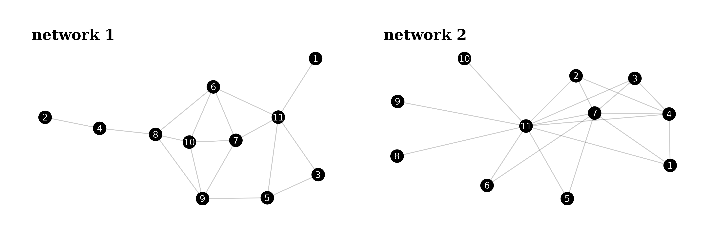
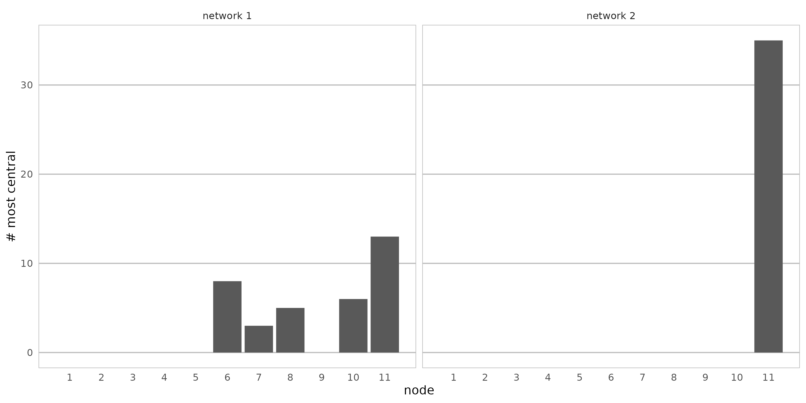
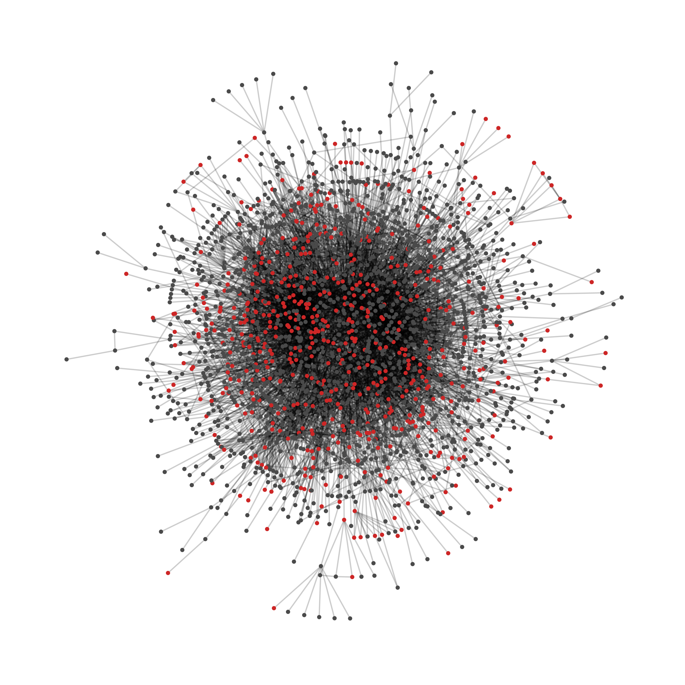
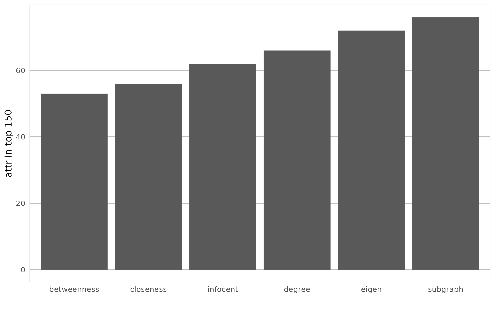
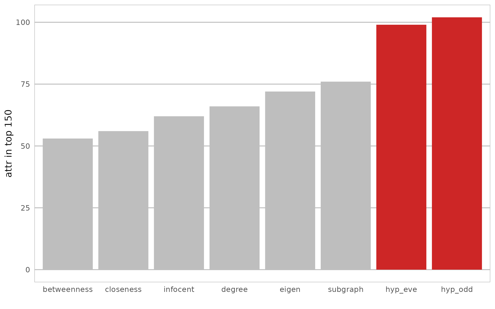
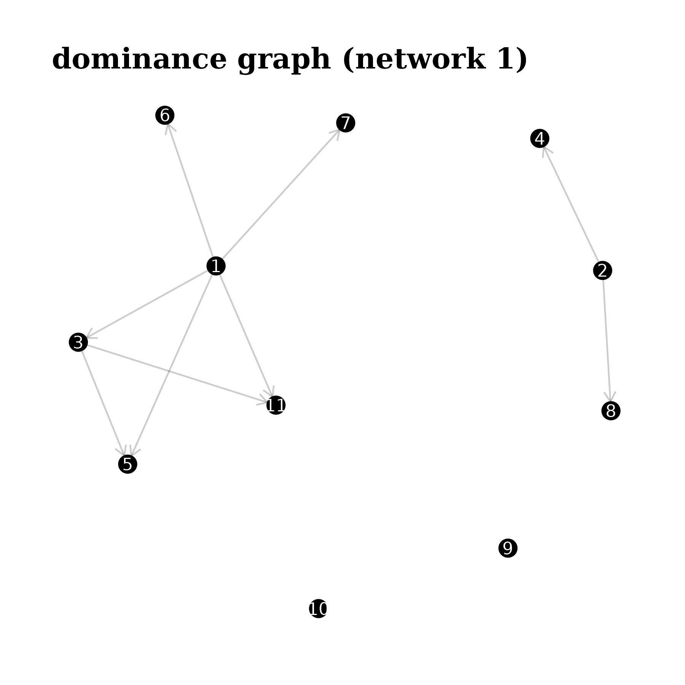
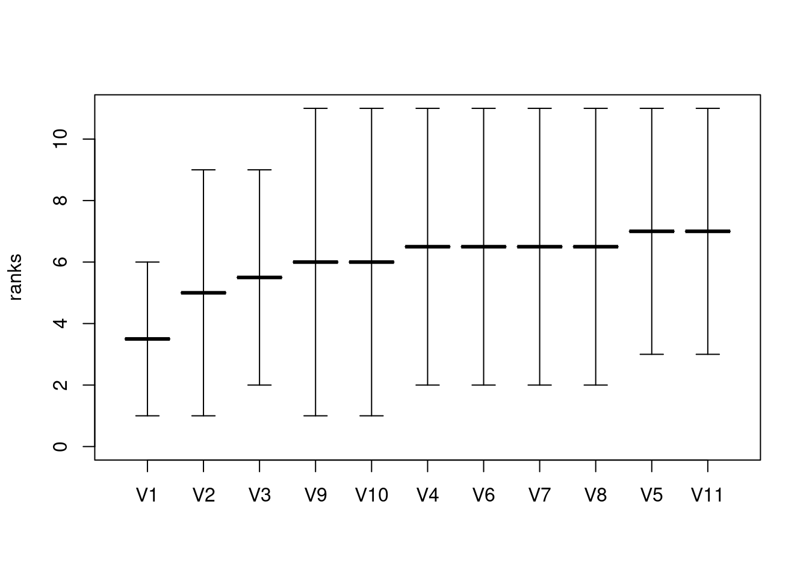
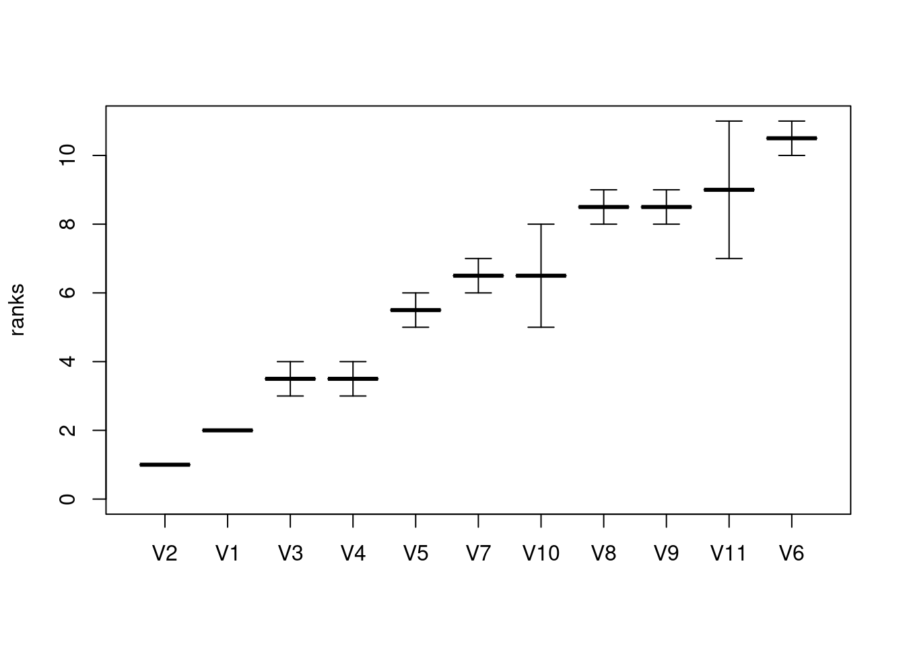

![]()
install.packages(c("igraph", "netrankr", "centiserve","sna","expm"))Network Centrality in R
using indices and alternative methods
network analysis
R
An Introduction to Network Centrality in R using the netrankr package
Required libraries
To run all the code in this tutorial, you need to install and load several packages.
library(netrankr)
library(igraph)Part 1
Introduction
One of the many tools to analyze networks are measures of centrality. In a nutshell, a measure of centrality is an index that assigns a numeric values to the nodes of the network. The higher the value, the more central the node.
R packages for centrality
(This section lists a great variety of different indices. If you are interested in the technical details, consult the help of the function and check out the references)
There are several packages that implement centrality indices for R. Of course, there are the big network and graph packages such as igraph,sna, qgraph, and tidygraph, which are designed as general purpose packages for network analysis. Hence, they also implement some centrality indices.
igraph contains the following 10 indices:
- degree (
degree()) - weighted degree (
graph.strength()) - betweenness (
betweenness()) - closeness (
closeness()) - eigenvector (
eigen_centrality()) - alpha centrality (
alpha_centrality()) - power centrality (
power_centrality()) - PageRank (
page_rank()) - eccentricity (
eccentricity()) - hubs and authorities (
authority_score()andhub_score()) - subgraph centrality (
subgraph_centrality())
In most cases, parameters can be adjusted to account for directed/undirected and weighted/unweighted networks.
The sna package implements roughly the same indices together with:
- flow betweenness (
flowbet()) - load centrality (
loadcent()) - Gil-Schmidt Power Index (
gilschmidt()) - information centrality (
infocent()) - stress centrality (
stresscent())
qgraph specializes on weighted networks. It has a generic function centrality_auto() which returns, depending on the network, the following indices:
- degree
- strength (weighted degree)
- betweenness
- closeness
The package also contains the function centrality(), which calculates a non-linear combination of unweighted and weighted indices using a tuning parameter \(\alpha\) (See Opsahl et al.).
There are also some dedicated centrality packages, such as centiserve, CINNA, influenceR and keyplayer. The biggest in terms of implemented indices is currently centiserve with a total of 33 indices.
The package is maintained by the team behind centiserver, the “comprehensive centrality resource and server for centralities calculation”. The website collects indices found in the literature. Currently (April 2023), it lists 403 different indices.
CINNA is a fairly new package. The package description says “Functions for computing, comparing and demonstrating top informative centrality measures within a network.” Most of the indices in the package are imported from other package, such as centiserve. In addition, there are:
- Dangalchev closeness (
dangalchev_closeness_centrality()) - group centrality (
group_centrality()) - harmonic closeness (
harmonic_centrality()) - local bridging centrality (
local_bridging_centrality())
The function calculate_centralities() can be used to calculate all applicable indices to a network. The primary purpose of the package is to facilitate the choice of indices by visual and statistical tools. If you are interested in the details, see this tutorial and this vignette.
influenceR and keyplayer are comparably small packages which implement only a small number of indices.
(For now, I deliberately leave out my package netrankr. While it implements a great variety of indices, it is not its primary purpose to provide a set of predefined measures. We will come to that in the next part.)
A small example
Let us start with a fairly simple example. Consider the following two small networks.
#data can be found here: https://github.com/schochastics/centrality
g1 <- readRDS("example_1.rds")
g2 <- readRDS("example_2.rds")
Now, without any empirical context, we want to determine the most central node in both networks. I wrote a small function which calculates 35 of the above mentioned indices.
require(expm)
all_indices <- function(g){
res <- matrix(0,vcount(g),35)
res[,1] <- igraph::degree(g)
res[,2] <- igraph::betweenness(g)
res[,3] <- igraph::closeness(g)
res[,4] <- igraph::eigen_centrality(g)$vector
res[,5] <- 1/igraph::eccentricity(g)
res[,6] <- igraph::subgraph_centrality(g)
A <- get.adjacency(g,sparse=F)
res[,7] <- sna::flowbet(A)
res[,8] <- sna::loadcent(A)
res[,9] <- sna::gilschmidt(A)
res[,10] <- sna::infocent(A)
res[,11] <- sna::stresscent(A)
res[,12] <- 1/centiserve::averagedis(g)
res[,13] <- centiserve::barycenter(g)
res[,14] <- centiserve::closeness.currentflow(g)
res[,15] <- centiserve::closeness.latora(g)
res[,16] <- centiserve::closeness.residual(g)
res[,17] <- centiserve::communibet(g)
res[,18] <- centiserve::crossclique(g)
res[,19] <- centiserve::decay(g)
res[,20] <- centiserve::diffusion.degree(g)
res[,21] <- 1/centiserve::entropy(g)
res[,22] <- centiserve::geokpath(g)
res[,23] <- centiserve::katzcent(g)
res[,24] <- centiserve::laplacian(g)
res[,25] <- centiserve::leverage(g)
res[,26] <- centiserve::lincent(g)
res[,27] <- centiserve::lobby(g)
res[,28] <- centiserve::markovcent(g)
res[,29] <- centiserve::mnc(g)
res[,30] <- centiserve::radiality(g)
res[,31] <- centiserve::semilocal(g)
res[,32] <- 1/centiserve::topocoefficient(g)
res[,33] <- CINNA::dangalchev_closeness_centrality(g)
res[,34] <- CINNA::harmonic_centrality(g)
res[,35] <- 1/CINNA::local_bridging_centrality(g)
apply(res,2,function(x) round(x,8))
}We blindly apply them to both networks and see what happens.
res1 <- all_indices(g1)
res2 <- all_indices(g2)The chart below shows a breakdown for how many indices return a specific node as the most central one.

In network 1, five different nodes are considered to be “the most central node” by different indices. In network 2, on the other hand, all 35 indices agree on node eleven as the most central one. The take away message from network 1 is clearly that choice matters. Depending on which index we choose, we can obtain very different results. Network 2 paints a completely different picture. All indices agree upon the most central node. Even better (or worse?), they all induce the same ranking. We can check that with the function compare_ranks() in the netrankr package by counting the wrongly ordered (discordant) pairs of nodes for pairs of indices \(x\) and \(y\). That is, \(x\) ranks a node \(i\) before \(j\) but \(y\) ranks \(j\) before \(i\).
discordant <- rep(1,35*34)
k <- 0
for(i in 1:(ncol(res2)-1)){
for(j in (i=1):ncol(res2)){
k <- k+1
discordant[k] <- compare_ranks(res2[,i],res2[,j])$discordant
}
}
any(discordant>0)[1] FALSESo, the indices not only agree upon the most central node, but also on the rest of the ranking!
You may be wondering, why we are only looking at the ranking and not the actual values. Effectively, the values themselves don’t have any meaning. There is no such thing as a “unit of centrality”, if we look at it from a measurement perspective. For instance, we can’t say that a node is “twice as between” as another if its betweenness value is twice as high. Centrality should thus not be considered to be on an interval scale, but rather an ordinal one. This might seem like a restriction at first, but we will see later on that it facilitates many theoretical examinations.
The two networks illustrate the big problem of choice. We have “only” tried 35 different indices, so we actually can’t make any conclusive statements about central nodes. After all, 35 indices can in the best case produce 35 completely different rankings. But theoretically, there are \(11! =\) 39,916,800 possibilities to rank the nodes of the network without allowing ties, which indices actually do. So, what if we missed hundreds of thousands of potential indices that would rank, say, node nine on top for network 1? What if those 35 indices are exactly the ones that rank node eleven on top for network 2, but no other index does that?
In the next example, we add some (made up) empirical context to illustrate the problem of how to validate the appropriateness of chosen indices.
An almost realistic example
Centrality indices are commonly used as an explanatory variable for some observed phenomenon or node attribute in a network. Let’s say we have the following abstract research question. Given a network where each node is equipped with a binary attribute, which could signify the presence or absence of some property. Can a centrality index “explain” the presence of this attribute?
#data can be found here: https://github.com/schochastics/centrality
g3 <- readRDS("example_3.rds")
Instead of 35 indices, we here focus on the more common indices.
cent <- data.frame(nodes=1:vcount(g3),attr=V(g3)$attr)
cent$degree <- igraph::degree(g3)
cent$betweenness <- igraph::betweenness(g3)
cent$closeness <- igraph::closeness(g3)
cent$eigen <- igraph::eigen_centrality(g3)$vector
cent$subgraph <- igraph::subgraph_centrality(g3)
cent$infocent <- sna::infocent(as_adj(g3,sparse=F))If we postulate that one of the indices is somehow related with the attribute, then we should see that nodes with the attribute should tend to be ranked on top of the induced ranking. The below bar chart shows the number of nodes having the attribute that are ranked in the top 150 for each index.

According to this evaluation, subgraph centrality is best in “explaining” the node attribute. But how conclusive is this now? Note that we did not specify any real hypothesis so basically any index could be a valid choice. Instead of trying out one of the other mentioned ones though, we now try to design a new index which hopefully gives us an even better “fit”. After some wild math, we may end up with something like this:
\[
c(u)= ccoef(u) \left[\sum\limits_{v \in N(u)} \sum\limits_{k=0}^{\infty} \frac{(A^{[u]})_{vv}^{2k}}{(2k)!} \right]
\] Ok, so what is happening here? \(ccoef(u)\) is the clustering coefficient of the node \(u\) (igraph::transitivity(g,type="local")). The first sum is over all neighbors \(v\) of \(u\). The second sum is used to sum up all closed walks of even length weighted by the inverse factorial of the length.
We can directly invent a second one, based on the walks of odd length. \[ c(u)= ccoef(u) \left[\sum\limits_{v \in N(u)} \sum\limits_{k=0}^{\infty} \frac{(A^{[u]})_{vv}^{2k+1}}{(2k+1)!} \right] \] Mathematically fascinating, yet both indices defy any rational meaning.
Both indices have not yet been considered in the literature except in a PhD thesis. The indices are implemented in netrankr as the hyperbolic index.
cent$hyp_eve <- hyperbolic_index(g3,type = "even")
cent$hyp_odd <- hyperbolic_index(g3,type = "odd")How do they compare to the other indices?

Both indices are far superior. Around 66% of the top 150 nodes are equipped with the attribute, compared to 50% for subgraph centrality.
Obviously, this was a very contrived example, yet it emphasizes some important points. First, it is relatively easy to design an index that gives you the results you intend to get and hence justify the importance of the index. Second, you can never be sure, though, that you found “the best” index for the task. There may well be some even more obscure index that gives you better results. Third, if you do not find a fitting index, you can not be sure that there does not exist one after all.
Summary
The examples were intended to highlight some of the problems that you may encounter when using centrality indices and how hard it is to navigate the index landscape, keeping up with all the newly designed ones.
One is therefore all to often tempted to go down the data-minning road. That is, take a handfull of indices, check what works best and come up with a post-hoc explanation as to why the choice was reasonable. Note, though, that this approach is not universally bad, or wrong. It mainly depends on what you your intentions are. You simply want to have a sort of predictive model? Go wild on the indices and maximize! The CINNA package offers some excellent tools for that.
However, if you are working in a theory-heavy area, then this approach is not for you. “Trial-and-Error” approaches are hardly appropriate to test theories. But how can we properly test a hypothesis with measures of centrality, when obviously there is very little agreement in the proper procedure for centrality measurement?
In the upcoming sections, we discuss a different approach to centrality, which may help in translating a theoretical construct into a measure of centrality.
Part 2
Introduction
When looking at the vast amount of indices, it may be reasonable to ask if there is any natural limit for what can be considered a centrality index. Concretely, are there any theoretical properties that an index has to have in order to be called a centrality index? There exist several axiomatic systems for centrality, which define some desirable properties that a proper index should have. While these systems are able to shed some light on specific groups of indices, they are in most cases not comprehensive. That is, it is often possible to construct counterexamples for most indices such that they do not fulfill the properties. Instead of the rather normative axiomatic approach, we explore a more descriptive approach. We will address the following questions:
- Are there any properties that are shared by all (or almost all) indices?
- If so, can they be exploited for a different kind of centrality analysis?
Neighborhood-inclusion
In the first post, we examined the following two small examples.
#data can be found here: https://github.com/schochastics/centrality
g1 <- readRDS("example_1.rds")
g2 <- readRDS("example_2.rds")It turned out that for network 1, 35 indices gave very different results and for network 2 they all coincided. In the following, we discuss why this is the case.
It turns out that there actually is a very intuitive structural property that underlies many centrality indices. If a node has exactly the same neighbors as another and potentially some more, it will never be less central, independent of the choice of index. Formally, \[ N(i) \subseteq N[j] \implies c(i) \leq c(j) \] for centrality indices \(c\). This property is called neighborhood-inclusion.
An illustration is given below. 
Node \(i\) and \(j\) have three common neighbors (the black nodes), but \(j\) has two additional neighbors (the grey nodes), hence \(i\)’s neighborhood is included in the neighborhood of \(j\). Note that the inclusion is actually defined for the closed neighborhood (\(N[j]=N(j) \cup \{j\}\)). This is due to some mathematical peculiarities when \(i\) and \(j\) are connected. Neighborhood-inclusion defines a partial ranking of the nodes. That is, some node pairs will not be comparable, because neither \(N(i) \subseteq N[j]\) nor \(N(j) \subseteq N[i]\) will hold. If the neighborhood of a node \(i\) is properly contained in the neighborhood of \(j\), then we will say that \(i\) is dominated by \(j\).
We can calculate all pairs of neighborhood-inclusion with the function neighborhood_inclusion() in the netrankr package.
P1 <- neighborhood_inclusion(g1)
P2 <- neighborhood_inclusion(g2)An entry \(P[i,j]\) is one if \(N(i)\subseteq N[j]\) and zero otherwise. With the function comparable_pairs(), we can check the fraction of comparable pairs. Let us start with the first network.
comparable_pairs(P1)[1] 0.163636Only 16% of pairs are comparable with neighborhood-inclusion. For a better understanding of the dominance relations, we can also visualize them as a graph.
d1 <- dominance_graph(P1)
An edge \((i,j)\) is present, if \(P[i,j]=1\) and thus \(i\) is dominated by \(j\). Centrality indices will always put these comparable pairs in the same order. To check this, we use the all_indices() function from the last post again.
res <- all_indices(g1)Let us focus on the triple \(1,3,5\).
P1[c(1,3,5),c(1,3,5)] #(compare also with the dominance graph) [,1] [,2] [,3]
[1,] 0 1 1
[2,] 0 0 1
[3,] 0 0 0So, indices should rank them as \(1\leq3\leq 5\).
ranks135 <- apply(res[c(1,3,5),],2,rank)
rownames(ranks135) <- c(1,3,5)
ranks135 [,1] [,2] [,3] [,4] [,5] [,6] [,7] [,8] [,9] [,10] [,11] [,12] [,13] [,14]
1 1 1.5 1 1 1.5 1 1 1.5 1 1 1.5 1 1 1
3 2 1.5 2 2 1.5 2 2 1.5 2 2 1.5 2 2 2
5 3 3.0 3 3 3.0 3 3 3.0 3 3 3.0 3 3 3
[,15] [,16] [,17] [,18] [,19] [,20] [,21] [,22] [,23] [,24] [,25] [,26] [,27]
1 1 1 1 1 1 1 2 1.5 1 1 1 1 1
3 2 2 2 2 2 2 2 1.5 2 2 2 2 2
5 3 3 3 3 3 3 2 3.0 3 3 3 3 3
[,28] [,29] [,30] [,31] [,32] [,33] [,34] [,35]
1 1 1.0 1 1 1 1 1 1
3 2 2.5 2 2 2 2 2 2
5 3 2.5 3 3 3 3 3 3All 35 indices indeed produce a ranking that is in accordance with what we postulated. (Ties are allowed in the ranking since we require “\(\leq\)” and not “\(<\)” ).
The is_preserved() function can be used to check if all dominance relations are preserved in the index induced rankings.
apply(res,2, function(x) is_preserved(P1,x)) [1] TRUE TRUE TRUE TRUE TRUE TRUE TRUE TRUE TRUE TRUE TRUE TRUE TRUE TRUE TRUE
[16] TRUE TRUE TRUE TRUE TRUE TRUE TRUE TRUE TRUE TRUE TRUE TRUE TRUE TRUE TRUE
[31] TRUE TRUE TRUE TRUE TRUEFor the other 84% of pairs that are not comparable by neighborhood-inclusion, indices are “at liberty” to rank nodes differently. Take the triple \(6,7,8\) as an example.
P1[6:8,6:8] #(compare also with the dominance graph) [,1] [,2] [,3]
[1,] 0 0 0
[2,] 0 0 0
[3,] 0 0 0ranks678 <- apply(res[6:8,],2,rank)
rownames(ranks678) <- 6:8
# unique rankings of 6,7,8
ranks678[,!duplicated(t(ranks678))] [,1] [,2] [,3] [,4] [,5] [,6] [,7] [,8]
6 2 2 3 2 2.5 2.5 1.5 3
7 2 1 1 3 1.0 2.5 1.5 2
8 2 3 2 1 2.5 1.0 3.0 1The 35 indices produce 8 distinct rankings of \(6,7,8\). This means that whenever a pair of nodes \(i\) and \(j\) are not comparable with neighborhood-inclusion, it is (theoretically) possible to construct an index for each of the three possible rankings (\(i<j\), \(j<i\), \(i\sim j\))
Moving on to the second network.
comparable_pairs(P2)[1] 1So all pairs are comparable by neighborhood-inclusion. Hence, all indices will induce the same ranking (up to some potential tied ranks, but no discordant pairs), as we already observed in the previous post.
Threshold graphs and correlation among indices
The second example network is part of the class of threshold graphs. One of their defining features is that the partial ranking induced by neighborhood-inclusion is in fact a ranking. A random threshold graph can be created with the threshold_graph() function. The function takes two parameters, one for the number of nodes, and one (approximately) for the density. The class includes some well known graphs, such as complete graphs or star graphs.
We know from the previous section that centrality indices will always produce the same ranking on these graphs. This allows us to reason about another topic that is frequently investigated: correlations among indices. Correlations are often attributed to the definitions of indices. Take closeness and betweenness. On first glance, they measure very different things: Being close to all nodes and being “in between” all nodes. Hence, we would expect them to be only weakly correlated. But threshold graphs give us a reason to believe, that correlations are not entirely dependent on the definitions but rather on structural features of the network. (This article gives more details and references on that topic).
As an illustration, we compare betweenness and closeness on a threshold graph and a threshold graph with added noise from a random graph.
#threshold graph
tg3 <- threshold_graph(100,0.2)
#noise graph
gnp <- sample_gnp(100,0.01,directed = FALSE)
A1 <- get.adjacency(tg3,sparse=FALSE)
A2 <- get.adjacency(gnp,sparse=FALSE)
#construct a noise threshold graph
tg3_noise <- graph_from_adjacency_matrix(xor(A1,A2),mode = "undirected")
#calculate discordant pairs for betweenness and closeness in both networks
disc1 <- compare_ranks(betweenness(tg3),closeness(tg3))$discordant
disc2 <- compare_ranks(betweenness(tg3_noise),closeness(tg3_noise))$discordant
c(disc1,disc2)[1] 0 484On the threshold graph we do not observe any discordant pairs for the two indices. However, the little noise we added to the threshold graph was enough to introduce 484 pairs of nodes that are now ranked differently. In general, we can say that
The closer a network is to be a threshold graph, the higher we expect the correlation of any pair of centrality indices to be, independent of their definition.
But how to define being close to a threshold graph? One obvious choice is to use the function comparable_pairs(). The more pairs are comparable, the less possibilities for indices to rank the nodes differently. Hence, we are close to a unique ranking obtained for threshold graphs. A second option is to use an appropriate distance measure for graphs. netrankr implements the so called majorization gap which operates on the degree sequences of graphs. In its essence, it returns the number of edges that need to be rewired, in order to turn an arbitrary graph into a threshold graph.
mg1 <- majorization_gap(tg3)
mg2 <- majorization_gap(tg3_noise)
c(mg1,mg2)[1] 0.0000000 0.0254873The result is given as a fraction of the total number of edges. So 3% of edges need to be rewired in the noisy graph to turn it into a threshold graph. To get the raw count, set norm=FALSE.
majorization_gap(tg3_noise,norm = FALSE)[1] 34Summary
Neighborhood-inclusion seems to be a property that underlies many centrality indices. If a node \(i\) is dominated by another node \(j\), then (almost) any index will rank \(j\) higher than \(i\). I am not going to make the bold statement of saying that all centrality indices have this property, although all commonly used and traditional indices have this property. However, it is easy to come up with an index that doesn’t preserve the partial ranking (Coincidentally, the two hyperbolic indices from the first post don’t preserve it. Thank god!). But if we accept the preservation of neighborhood-inclusion to be a defining property of centrality indices, then we are able to a) derive more theoretical results about centrality (see correlation section) b) distinguish proper indices from invalid ones (see hyperbolic indices) and c) think about new ways of assessing centrality, that do not necessarily rely on indices.
Point c) will be partially addressed in the next post and in more detail in subsequent ones.
The main focus for the next post is on how to extend neighborhood-inclusion to other forms of dominance. Additionally, we will see how to deconstruct indices into a series of building blocks, which allows for a deeper understanding on what indices actually “measure”.
Part 3
Introduction
Neighborhood-inclusion seems to underlie many different centrality indices and as such serves (or better: could serve) as a defining property of a centrality index. That is:
An index is a measure of centrality if and only if it preserves the partial ranking induced by neighborhood-inclusion
While this gives as a theoretical basis for centrality, it comes with a bit of problem. Namely, that we do not expect many comparable pairs in (large) real-world networks. Take the third example network from the first post.
g3 <- readRDS("example_3.rds")
P <- neighborhood_inclusion(g3)
comparable_pairs(P)[1] 0.00600532Only 0.6% of pairs are comparable. This means that centrality indices are at liberty to rank 99.4% of pairs in any order. So, neighborhood-inclusion may not be very restrictive in large networks. This is much like with structural equivalence. It is a very intuitive concept for equivalences in networks (having exactly the same neighbors), however we do not expect many equivalent pairs in large networks. This does not render the concept useless, but requires some relaxations.
In the following, we introduce dominance relations, which incrementally extend the partial ranking of neighborhood-inclusion and thus tighten the partial ranking that indices preserve. We start by illustrating how indices can be decomposed into a series of building blocks.
Deconstructing Indices
Centrality indices assess structural importance based on a great variety of different graph theoretic notions, like shortest paths (closeness) or walks (subgraph centrality). Implicitly, though, they all follow a simple recipe:
- derive an indirect relation
- aggregate the indirect relations
As mentioned above, indirect relation are commonly derived via graph trajectories such as paths and walks, for instance to compute distances. The aggregation is usually a simple summation of all relations of a node, but others are possible too (e.g. \(\max\) as in eccentricity). In its most generic form, we can thus write a centrality index as \[ c(i)= \sum_j \tau(x)_{ij} \] where \(x\) are the observed relations (basically the adjacency matrix) and \(\tau\) a generic transformation function. Replacing \(\tau\) with \(id\), we obtain degree centrality and setting \(\tau=dist\), we obtain closeness. A suitable function \(\tau\) can be defined for all centrality indices, such that any index can basically be seen as degree in an appropriately transformed network.
The package netrankr provides a set of 24 different indirect relations that can be used to construct indices. A few common examples are given below.
#closeness
g |>
indirect_relations(type='dist_sp') |>
aggregate_positions(type='invsum')
#betweenness
g |>
indirect_relations(type='depend_sp') |>
aggregate_positions(type='sum')
#eigenvector
g |>
indirect_relations(type='walks',FUN=walks_limit_prop) |>
aggregate_positions(type='sum')
#subgraph
g |>
indirect_relations(type='walks',FUN=walks_exp) |>
aggregate_positions(type='self')Consult the help for indirect_relations() to see all options.
Note that we make use of the |> operator. This should appeal to the recipe idea from above: network |> indirect_relation |> aggregation (but requires R Version >4.0). The package also includes a handy RStudio addin, which can be used to build the pipelines more easily.
Defining indices in this way is certainly more cumbersome than using, say, betweennes(g). However, it allows us to intervene at any step and do something else.
Extended Dominance Relations
To illustrate the “something else”, we look at our first small example network again.
g1 <- readRDS("example_1.rds")Following the recipe, you have decided, that the relations of interest for your analysis are the distances between nodes. The problem is, aggregating them into an index can still be done in various ways. Three distance based centrality examples are shown below.
#classic closeness
c_C <- g1 |>
indirect_relations(type="dist_sp") |>
aggregate_positions(type="invsum")
#harmonic closeness
c_HC <- g1 |>
indirect_relations(type="dist_sp",FUN=dist_inv) |>
aggregate_positions(type="sum")
#residual-type closeness
c_RC <- g1 |>
indirect_relations(type="dist_sp",FUN=dist_2pow) |>
aggregate_positions(type="sum")Any of the above indices starts with the derivation of distances, but then proceeds with a different form of aggregation: \[ c_C(i)=\frac{1}{\sum dist(i,j)},\quad c_{HC}(i)=\sum\frac{1}{dist(i,j)}, \quad c_{RC}(i)=\sum 2^{-dist(i,j)} \] Possibilities are virtually endless for aggregating distances into an index. From the previous part, we know that any of these indices preserve neighborhood-inclusion. Once we have settled for a relation, as in this case, we can extend the partial ranking using the following considerations: If a \(dist(i,k)\) is larger than \(dist(j,k)\) for all nodes \(k\), then no matter how we aggregate the relations (as long as it is monotonic), \(i\) will always be less central then \(j\). With a bit more formalism: \[ dist(i,k) \geq dist(j,k) \text{ for all } k \implies c_x(i)\leq c_x(j) \] where \(c_x\) is an arbitrary centrality index based on distances. This actually defines a new dominance relation among nodes. In fact, we can go a step further. It does not really matter in which order we aggregate the distances, the result will always be the same. Hence, we can permute all relations of a single node without affecting the result. A convenient choice of permutation is simply to reorder all relations in descending order. Afterwards, we can compute the dominance relations as above. (More formal details on these dominance relations can be found in this article.)
We can compute this new dominance relation using the function positional_dominance(). The benefit parameter is set to FALSE since large distances are not beneficial for a node to have. Setting map=TRUE invokes the above mentioned reordering. For comparison, we also compute neighborhood-inclusion again.
P <- neighborhood_inclusion(g1)
D <- g1 |>
indirect_relations(type="dist_sp") |>
positional_dominance(benefit=FALSE,map=TRUE)
c("neighborhood-inclusion"=comparable_pairs(P),"distance dominance"=comparable_pairs(D))neighborhood-inclusion distance dominance
0.163636 0.872727 By fixing our relation of interest to distances and allowing reordering of relations, we went from only 16% of comparable pairs to 87%! Hence, no matter what index based on distance we use, results will always be very similar. As a sanity check, we can verify that all distance based indices from above preserve the dominance relations.
c("classic"=is_preserved(D,c_C),"harmonic"=is_preserved(D,c_HC),"residual"=is_preserved(D,c_RC)) classic harmonic residual
TRUE TRUE TRUE Partial Centrality
By now, we should have understood that there are various kinds of partial rankings in networks, which form the basis of centrality. Indices extend these partial rankings into one possible ranking, but, as we will see later, there might be hundreds of thousands of possible rankings. And hence, hundreds of thousands of indices that produce these rankings. Instead of inventing hundreds of thousands of indices, why not just study the partial rankings? Or why not be extremely bold, and try to analyse all possible rankings at once?
In this section, we consider the former question, by introducing rank intervals. A rank interval of a node is the set of ranks a node can have in any ranking that extends a given partial ranking. Let us consider two extreme cases. A node that is neither dominated nor dominates any other node can potentially have any rank. So its rank interval is \([1,n]\). (We use the convention, that \(n\) is the top rank and \(1\) the lowest possible rank). On the other hand, if a node dominates all other nodes, it can only be ranked on the top. So its rank interval is just a point.
netrankr includes the function rank_intervals() which returns the rank intervals for all nodes in the network. A visual representation of the intervals can be obtained by using the plot() function, as done below for the first example network and neighborhood-inclusion as partial ranking input. We also included an optional data.frame containing centrality scores of five indices.
cent_scores <- data.frame(
degree=degree(g1),
betweenness=betweenness(g1),
closeness=closeness(g1),
eigen=eigen_centrality(g1)$vector,
subgraph=subgraph.centrality(g1))
plot(rank_intervals(P),cent.df = cent_scores)
The rank intervals are extremely big for this network. Node 10, for instance can take any possible rank. The most constraint interval is that of node 1, containing 6 possible ranks. The rank intervals can be interpreted as a sort of confidence interval for centrality. The larger the interval, the less explanatory power a single index may have Again, consider Node 10. It is the most central node according to subgraph centrality, but ranks very low in betweenness.
We have learned that we can extend neighborhood-inclusion by choosing a relation of interest as basis for our analysis. For the example network, we considered distances. The below figure shows the resulting rank intervals.
cent_scores <- data.frame(
classic=c_C,
harmonic=c_HC,
residual=c_RC)
plot(rank_intervals(D),cent.df = cent_scores)
Notice how much smaller they got. The intervals of node 1 and 2 even collapse into a single point. They will thus always be ranked at the bottom in any distance based centrality ranking.
Rank intervals are a convenient choice to assess the possibilities of rankings in a network. It is important to understand, though, that the ranks in each interval do not occur with uniform probability. A rank interval \([6,7]\) does not mean that the node is ranked 6th in 50% of all possible rankings. We address the rank probabilities in the next section.
Probabilistic Centrality
A node ranking can be defined as a mapping \[rk: V \to \{1,\ldots,n\},\] where we use the convention that \(u\) is the top ranked node if \(rk(u)=n\) and the bottom ranked one if \(rk(u)=1\). The set of all possible rankings can then be characterized as \[ \mathcal{R}(\leq)=\{rk:V \to \{1,\ldots,n\}\; : \; u\leq v \implies rk(u)\leq rk(v)\}. \] This set contains all rankings that could be obtained for centrality indices that preserve the partial ranking of a dominance relation “\(\leq\)”.
Once \(\mathcal{R}(\leq)\) is calculated, it can be used for a probabilistic assessment of centrality, analyzing all possible rankings at once. Examples include relative rank probabilities (How likely is it, that a node \(u\) is more central than another node \(v\)?) or expected ranks (How central do we expect a node \(u\) to be).
netrankr includes the function exact_rank_prob(), which helps to answer the above posted questions. We stick with our small example network and apply the function to both, neighborhood-inclusion and dominance based on distances.
probNI <- exact_rank_prob(P)
probD <- exact_rank_prob(D)The function returns a large list of different outputs, which we discuss in the following. The number of possible rankings is stored in lin.ext.
c("neighborhood-inclusion"=probNI$lin.ext,"distances"=probD$lin.ext)neighborhood-inclusion distances
739200 20 So, for this tiny network, there are still more than 700,000 possibilities to rank the nodes differently. If we restrict ourselves to distances, we end up with only 20.
The rank probabilities (for example how likely is it that node \(u\) is ranked on top?) are stored in the matrix rank.prob. We here focus on the probability to be the most central node.
top_rank <- ncol(probNI$rank.prob)
probNI$rank.prob[,11] V1 V2 V3 V4 V5 V6 V7 V8
0.0000000 0.0000000 0.0000000 0.1363636 0.1636364 0.1090909 0.1090909 0.1363636
V9 V10 V11
0.0909091 0.0909091 0.1636364 Node 5 and 11 have the highest probability to be the most central node. You can think of the probabilities as follows: If we would apply thousands of indices to the network, in 16% of the cases will node 5 be the most central node.
Relative rank probabilities (How likely is it that \(u\) is less central than \(v\)?) are stored in the matrix relative.rank.
round(probNI$relative.rank,2) V1 V2 V3 V4 V5 V6 V7 V8 V9 V10 V11
V1 0.00 0.67 1.00 0.95 1.00 1.00 1.00 0.95 0.86 0.86 1.00
V2 0.33 0.00 0.67 1.00 0.92 0.83 0.83 1.00 0.75 0.75 0.92
V3 0.00 0.33 0.00 0.80 1.00 0.75 0.75 0.80 0.64 0.64 1.00
V4 0.05 0.00 0.20 0.00 0.56 0.44 0.44 0.50 0.38 0.38 0.56
V5 0.00 0.08 0.00 0.44 0.00 0.38 0.38 0.44 0.32 0.32 0.50
V6 0.00 0.17 0.25 0.56 0.62 0.00 0.50 0.56 0.43 0.43 0.62
V7 0.00 0.17 0.25 0.56 0.62 0.50 0.00 0.56 0.43 0.43 0.62
V8 0.05 0.00 0.20 0.50 0.56 0.44 0.44 0.00 0.38 0.38 0.56
V9 0.14 0.25 0.36 0.62 0.68 0.57 0.57 0.62 0.00 0.50 0.68
V10 0.14 0.25 0.36 0.62 0.68 0.57 0.57 0.62 0.50 0.00 0.68
V11 0.00 0.08 0.00 0.44 0.50 0.37 0.37 0.44 0.32 0.32 0.00For example, the probability that node 2 is less central than node 1 is \(0.33\). The closer a probability to \(0.5\) (see node 11 and 5), the less reason exists to put either node on top of the other.
The last return values of interest are the expected ranks and the standard deviation in expected.rank and rank.spread. The expected ranks can be seen as a sort of baseline ranking. Applying hundreds of random indices, this is the ranking we could expect to get on average.
exp_rk <- round(probNI$expected.rank,2)
sd_rk <- round(probNI$rank.spread,2)
exp_rk V1 V2 V3 V4 V5 V6 V7 V8 V9 V10 V11
1.71 3.00 4.29 7.50 8.14 6.86 6.86 7.50 6.00 6.00 8.14 sd_rk V1 V2 V3 V4 V5 V6 V7 V8 V9 V10 V11
0.96 1.90 1.72 2.54 2.16 2.72 2.72 2.54 3.16 3.16 2.16 The standard deviations are quite large for neighborhood-inclusion, which was to be expected from the big rank intervals. Below, we calculate the expected ranks for the distance based dominance.
exp_rk <- round(probD$expected.rank,2)
sd_rk <- round(probD$rank.spread,2)
exp_rk V1 V2 V3 V4 V5 V6 V7 V8 V9 V10 V11
2.0 1.0 3.5 3.5 5.3 10.7 6.6 9.4 9.4 6.2 9.8 sd_rk V1 V2 V3 V4 V5 V6 V7 V8 V9 V10 V11
0.00 0.00 0.50 0.50 0.46 0.46 0.49 0.49 0.49 0.98 0.98 As a word of warning: The problem of finding all possible rankings for a partial ranking is computationally a hard problem. So it is advisable to use exact_rank_prob() only for small networks. Some benchmark results and approximation methods for larger networks can be found here.
Summary
After this part, it is time to take stock of what we have done so far. To date, putting it bluntly, network centrality is nothing more than the application of indices to a network:

The only degree of freedom is the choice of index and it is hard to justify choices without resorting to data-driven reasoning, as in “We used betweenness because it worked best”.
The introduced neighborhood-inclusion and more specific dominance concepts allow for additional ways of analyzing centrality in networks, described in this superficial diagram.

Any centrality analysis starts with identifying the relation of interest, which replaces the choice of index. The relation of interest is usually some graph-theoretic property (e.g. distances) that we assume to be indicative for centrality. The relations of a node to all others is called its position. The aggregation of the relations leads to the definition of indices, hence the usual centrality concept. However, positions can also be compared via positional dominance, the dominance relation introduced in this post, leading to partial centrality rankings and the option to calculate probabilistic centrality rankings.
Citation
BibTeX citation:
@online{schoch2022,
author = {David Schoch},
title = {Network {Centrality} in {R}},
date = {22-04-27},
url = {https://github.com/schochastics/centrality},
langid = {en}
}
For attribution, please cite this work as:
David Schoch. 22AD. “Network Centrality in R.” April 27,
22AD. https://github.com/schochastics/centrality.